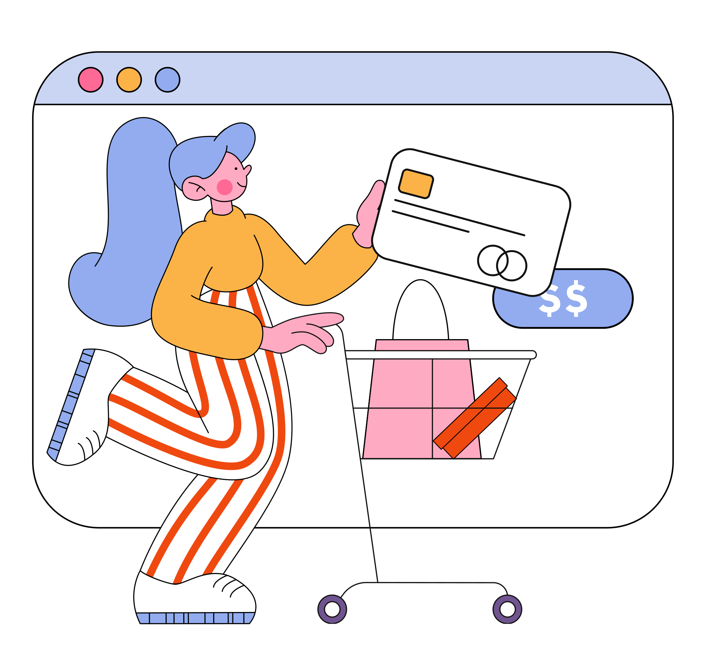

La configuración de servicio se refiere a cómo se gestionan los servicios que ofrece un negocio electrónico.
La configuración de servicio puede ser un proceso muy complejo, ya que implica muchos aspectos diferentes
Es esencial tener una comprensión completa de cómo funciona la configuración de servicio para poder optimizar la eficiencia y la eficacia de su negocio electrónico.
La configuración de servicio se divide en tres fases principales: la planificación, la implementación y la operación.
Se define la arquitectura del servicio y se identifican los requisitos de capacidad y disponibilidad
Se configuran los recursos y se realiza la integración de los sistemas.
Se monitorea y se optimiza la configuración para garantizar un rendimiento óptimo.
Hay varios elementos a considerar, incluyendo la virtualización, el equilibrio de carga, la escalabilidad, la redundancia, la seguridad y la monitorización. La virtualización se refiere a la creación de múltiples máquinas virtuales en un solo servidor físico, lo que permite que los recursos se compartan eficientemente entre las aplicaciones.
Se asegura de que las solicitudes entrantes se distribuyan de manera uniforme entre los servidores disponibles, evitando así una sobrecarga en cualquier servidor específico.
Es importante garantizar que los datos del cliente y las transacciones se mantengan seguros mediante el uso de técnicas de cifrado y autenticación. Además, es esencial tener una monitorización constante del sistema para identificar y abordar cualquier problema de manera oportuna.
la configuración de servicio es un aspecto fundamental de la arquitectura tecnológica de los negocios electrónicos. Si se hace correctamente, puede proporcionar un rendimiento óptimo, una alta disponibilidad y una seguridad sólida. Si se descuida, puede tener consecuencias graves, como una baja velocidad de respuesta del sitio web o una vulnerabilidad de seguridad.
Busca las palabras que aparecen del lado izquierdo, una vez realizada podrás continuar